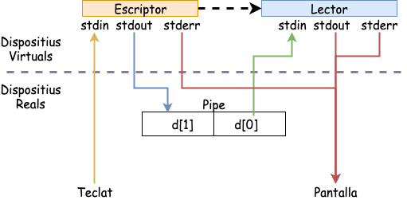

Pipes i redirecció d’entrada/sortida
Unitat 3 · Sistemes Operatius (SO)
Implementació de les Pipes
Les pipes es poden implementar com a buffers circulars basats en memòria assignada pel sistema operatiu. Aquestes pipes es coneixen com a pipes sense nom i són transitòries. Una pipe sense nom deixa d’existir quan tots els processos que la tenen assiganda acaben o tanquen els seus descriptors associats a la pipe.

Els pipes es creen en el moment que s’obren mitjançant la crida a sistema pipe() (unistd.h) o amb la sintaxis |.
Creació de Pipes
- La crida a sistema
pipe(), crea dos descriptors de fitxer. Un de lectura (desc[0]) i un d’escriptura (desc[1]). - La informació que s’escriu per desc[1] es llegeix per desc[0].
- Una vegada el
pipe()s’ha creat; per poder utilitzar-lo els processos han d’heretar aquests descriptors del procés pare.
Comunicació unidireccional (I)

Comunicació unidireccional (II)
Comunicació unidireccional (III)

Comunicació unidireccional (IV)
void main(){
int fd[2]; // Descriptors associats a una pipe
pid_t pidFill;
/* El primer element de la matriu (fd[0]) està configurat i obert per
a la lectura, mentre que el segon element està configurat i obert per
escriure (fd[1]. Totes les dades que viatgen per la pipe es mouen
pel nucli. */
pipe(fd); pidFill = fork();
if (pidFill == -1){
perror("fork"); exit(1);
} else if (pidFill == 0){
/*El procés fill tanca la escriptura per la pipe*/ close(fd[1]);
} else {
/* El procés pare tanca la lectura per la pipe */ close(fd[0]);
}
}Comunicació bidireccional (V)
- El procés pare necessitarà dues pipes (una per cada direcció).
- El pare fa un
fork()creant una còpia del pare i duplicant els descriptors de fitxers associats a les dues pipes. - El procés pare tanca la lectura de la sortida del pipe1.
- El procés fill tanca l’escriptura a l’entrada del pipe1.
- El procés fill tanca la lectura de la sortida del pipe2.
- El procés pare tanca l’escriptura a l’entrada del pipe2.
Comunicació bidireccional (Pipes)
Pipe 1

Pipe2

Escriptura en les pipes
- L’escriptura a les pipes es realitza utilitzant la crida a sistema: write() o la funció fprintf().
- Si un procés escriu en un pipe que tingui el descriptor de lectura tancat, write() falla i s’envia un senyal SIGPIPE.
- Si un procés escriu menys bytes dels que admet el pipe, l’escriptura es realitza de forma atòmica.
- Si s’intenta escriure sobre un pipe ple; el procés es queda bloquejat fins que el pipe es buidi (un altre procés ha llegit les dades) i llavors s’acaba l’escriptura.
Lectura de les pipes
- La lectura dels pipes es fan mitjançant la crida a sistema: read() o la funció fscanf().
- Si un procés llegeix en un pipe que tingui el descriptor tancat, retorna un 0, indicant la condició de final de fitxer.
- Si un procés llegeix d’un pipe buit es bloqueja fins que les dades estiguin disponibles.
- Si un procés intenta llegir més dades que les disponibles en un pipe, es llegeixen els disponibles i es retorna el nombre de bytes llegits.
Exemple: Lector-Escriptor (I)
Lector
Exemple: Lector-Escriptor (II)
Pare
Exemple: Lector-Escriptor (III)
Pare
Exemple: Lector-Escriptor (IV)
Pare
Redirecció i duplicats
Per utilitzar pipes amb la crida a sistema exec i simular el comportament del sistema operatiu quan interactuem amb la shell, necessitem redireccionar la sortida i l’entrada de la pipe a descriptors de fitxers predefinits assignats a cada procés.

- Tancant els descriptors estàndard.
- Duplicant els descriptors de fitxer utilitzant la crida a sistema
dup()(unistd.h).
dup() i dup2()
- dup: utilitza el descriptor de fitxer lliure més petit per duplicar el descriptor de fitxer fdold.
- dup2: fa que fdnew sigui una còpia de fdold, tancant fdold si és necessari.
Exemple a linux: ls | wc -l (I)

Exemple a linux: ls | wc -l (II)
- El procés 1 farà un recobriment de la comanda ls i l’executarà. Per defecte la comanda ls imprimeix per stdout el llistat de fitxers i directoris del directori actual.
- En aquest cas la pipe (|) indica que
lsno escriurà per stdout i ho farà per la pipe. D’aquesta manera no veurem el llista de fitxers a la terminal, seran enviats a la pipe. - El procés 2 farà un recobriment de la comanda wc -l, aquesta comanda compta el nombre de línies rebudes per stdin. En aquest cas, com tenim la comanda precedida d’una pipe… El procés redireccionarà stdin a la pipe. Per tant, llegirà el contingut escrit per la comanda
ls. - Per defecte la comanda
wc -lescriu a stdout, com ara no hi ha cap més pipe. Aquesta sortida no es redirecciona i per tant únicament veurem el resultat per stdout. És a dir, el nombre de fitxers i directoris del directori actual.
Exemple a linux: ls | wc -l (III)

Implementació amb C ls | wc -l
int main(int argc, char *argv[]){
int fd[2];
char *p1[] = {"ls", NULL};
char *p2[] = {"wc", "-l", NULL};
if (pipe(fd)<0){ perror("Error de creació del pipe fd[]");exit(-1);}
int pid1;int pid2;
switch (pid1 = fork()){
case -1: perror("Error fork()"); exit(-2); break;
case 0: //@TODO
}
switch (pid2 = fork()){
case -1: perror("Error fork()"); exit(-2); break;
case 0: //@TODO
}
waitpid(pid1,0,0);
waitpid(pid2,0,0);
}Implementació amb C ls | wc -l
Fill 1 (ls)
if (close(pfd[0]) == -1)
perror("close 1");
/* Duplicate stdout on write end of pipe;
close duplicated descriptor */
if (fd[1] != STDOUT_FILENO) {
if (dup2(fd[1], STDOUT_FILENO) == -1)
perror("dup2 1");
if (close(fd[1]) == -1)
perror("close 2");
}
execlp("ls", "ls", (char *) NULL);
perror("execlp ls");Implementació amb C ls | wc -l
Fill 2 (wc -l)
if (close(fd[1]) == -1)
perror("close 3");
/* Duplicate stdin on read end of pipe;
close duplicated descriptor */
if (fd[0] != STDIN_FILENO) {
if (dup2(fd[0], STDIN_FILENO) == -1)
perror("dup2 2");
if (close(fd[0]) == -1)
perror("close 4");
}
execlp("wc", "wc", "-l", (char *) NULL);
perror("execlp wc");Implementació amb C ls | wc -l
Com és que el programa no acaba mai?
El procés pare ha de tancar els descriptors de fitxer que no utilitza. Si no els procés fill lector de la pipe no acaba mai. Ja que no tots els processos han tancat els descriptors de fitxer associats a la pipe.
Això és tot per avui
TAKE HOME MESSAGE
Les pipes són mecanismes de comunicació entre processos que permeten la transmissió de dades d’un procés a un altre. Es poden utilitzar per a comunicació unidireccional o bidireccional. Cal comprendre com crear pipes, escriure i llegir dades en elles, i com utilitzar-les en la redirecció d’entrada/sortida de processos en execució.


Unitat 3 ¬∑ Sistemes Operatius (SO) üè†